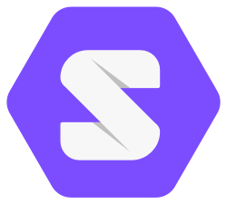

Solid is a set of modular specifications, which build on, and extend the founding technology of the world wide web (HTTP, REST, HTML). They are 100% backwards compatible with the existing web. Each spec, taken in isolation, provides extra features to an existing system. However, when used in combination, they enable exciting new possibilities for web sites and applications.
The main enhancement is that the web becomes a collaboratibe read-write space, passing control from owners of a server, to the users of that system. In order to write data as well as to read it, and to protect privacy, it is important to control who has access to what. This is managed using the web access control list specification.

For permissions it is essential to have a concept of identity, for which the WebID Identity spec is used. This is a minimalistic identity spec, which allows a URI to denote a user, and return back machine-readable data. Authentication of that identity is provided using WebID-TLS and WebID-OIDC right now, but other strategies, such as key fobs, or two factor authentication, could be added to depending on system needs.
Discovery is the final piece and allows the ability to tie all of these things together and enables both humans and machines to participate in a rich ecosystem, leading to emergent and self-organizing growth. The key tool for facilitating this is the URI specification. This forms the basis of the Linked Data philosophy which glues all of our data together, to create a complete Web Operating System.
Own your data and choose apps to manage it
Within the Solid ecosystem, you decide where you store your data. Photos you take, comments you write, contacts in your address book, calendar events, how many miles you run each day from your fitness tracker… they’re all stored in your Solid POD. This Solid POD can be in your house or workplace, or with an online Solid POD provider of your choice. Since you own your data, you’re free to move it at any time, without interruption of service.
You give people and your apps permission to read or write to parts of your Solid POD. So whenever you’re opening up a new app, you don’t have to fill out your details ever again: they are read from your POD with your permission. Things saved through one app are available in another: you never have to sync, because your data stays with you.
This approach protects your privacy and is also great for developers: they can build cool apps without harvesting massive amounts of data first. Anyone can create an app that leverages what is already there.
Your pod is your personal storage space
Store anything you want in your own Solid POD. PODs are like secure USB sticks for the Web, that you can access from anywhere. When you give others access to parts of your POD, they can react to your photos and share their memories with you. You decide which things apps and people can see.
Think of your Solid POD as your own private website, except that your data interoperates with all your apps, which means you have your own personal API to go along with it. When you post comments or videos online, your friends can view them with whatever app they like, such as an album viewer or a social feed. It’s your data, that can be shaped in any way or form.
You can have as many PODs as you like, and they live on Solid enabled Web servers. Install the Solid Server on your own server at your home or workplace, or Get a Solid POD from a listed provider.
Your solid pod POD provides your identity
In order to prove ownership of your data, you need a way to identify yourself. Rather than relying on a third party, you can use your Solid POD to say who you are. So no more “Log in with X” or “Log in with Y” on the Web — just “Log in with your own Solid POD”.